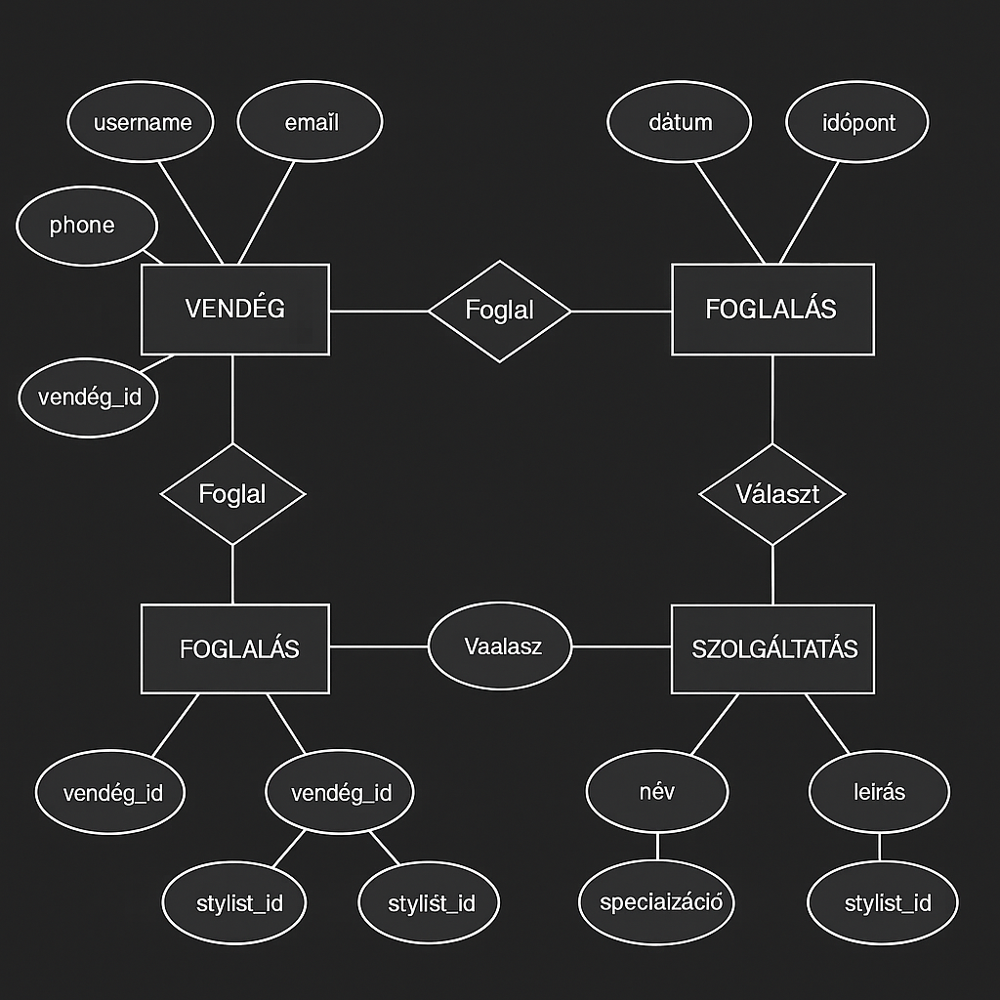

ER-modell a Vendég – Foglalás – Szolgáltatás fogalmakra építve.
1. Cél
Az adatbázis-terv a fodrász szalon időpontfoglaló rendszer (IdőMester)
fő fogalmait (VENDÉG, FOGLALÁS, SZOLGÁLTATÁS) írja le relációs modellben.
Az alábbi ER-modell a kapcsolatokat szemlélteti.
2. ER-modell diagram
Az alábbi ER-diagram a VENDÉG – FOGLALÁS – SZOLGÁLTATÁS közötti kapcsolatokat,
valamint a legfontosabb attribútumokat mutatja:

3. Entitások és attribútumok
3.1 VENDÉG
username – felhasználónév
email – e-mail cím
phone – telefonszám
vendég_id – vendég azonosító (PK)
3.2 FOGLALÁS
dátum – a foglalás napja
időpont – a foglalás pontos ideje
vendég_id – hivatkozás a VENDÉG entitásra
stylist_id – hivatkozás a választott stylistre
3.3 SZOLGÁLTATÁS
név – szolgáltatás neve (pl. hajvágás)
leírás – rövid leírás
specializáció – milyen típusú szolgáltatáshoz kapcsolódik
stylist_id – melyik stylist végezheti
4. Kapcsolatok
VENDÉG – FOGLALÁS (Foglal): egy vendég több foglalást is létrehozhat.
FOGLALÁS – SZOLGÁLTATÁS (Választ): egy foglalás pontosan egy szolgáltatáshoz tartozik.
FOGLALÁS – STYLIST: a foglalásban rögzítjük, melyik stylist végzi a szolgáltatást.
5. Összegzés
A fenti ER-modell jól leképezi az IdőMester foglalási folyamatát:
a vendég foglal egy szolgáltatást egy adott időpontra, egy választott
stylisttal. Az adatbázis-terv a későbbi relációs táblák (pl. guests,
appointments, services) kialakításának alapját adja.